탄소중립 실천으로
ESG GLOBAL VINACompany
ESG GLOBAL VINA
ESG GLOBAL VINA는 탄소중립 선도기업 ESG GLOBAL의 베트남 현지
법인이며
환경정화 식물인 ‘케나프(Kenaf)’ 농장을 대규모로 운영함으로써
온실가스 감축에 기여하고 있습니다.
케나프는 각종 영양성분이 풍부한 최적의 사료작물이며,
활성탄, 2차전지 음극재, 천연펄프, 건축 자재, 생분해플라스틱 등
다양한 친환경 제품의 재료로 활용될 수 있습니다.
ESG GLOBAL VINA는 기후위기 극복에 실질적으로 기여하는 친환경기업으로 발돋움하고 있습니다.
감사합니다.
Business
케나프 재배
ESG GLOBAL VINA의 케나프 농장은 베트남 Binh Phuoc성에 위치하고
있습니다.
해당 지역의 비옥한 토지와 아열대 기후의 조화로 연간 최대 5모작
생산이 가능합니다.
종자를 외부에서 조달하는 방식이 아닌,
자체 케나프 종자 농장을 운영하여 안정적으로 케나프를
재배합니다.
더불어 연도별 농장 확대 계획을 수립하여 지속적인 케나프 생산
규모를 확대 추진 중에 있습니다.
파종
재배
수확
Business
사료 제조
수확한 케나프는 농장 인근의 가공 공장으로 운반, 분쇄 후 건조
과정을 거쳐 가축 사료용 펠릿으로 가공됩니다.
펠릿은 다양한 가축의 기호와 영양 성분을 고려한 조단백 함량에
맞춰 생산됩니다.
ESG GLOBAL VINA만의 독자적인 사료제조 기술을 바탕으로 고품질
케나프 사료를 생산합니다.
분쇄
건조
펠릿
Business
케나프 농장
ESG GLOBAL VINA의 케나프 농장은 베트남 Binh Phuoc성에 위치하고
있습니다. 베트남 특유의 비옥한 토양과 아열대 기후의 조화로 연간
최대 5모작이 가능한
최적의 환경입니다.
ESG GLOBAL VINA는 종자농장을 자체 보유함으로써 우량 종자의
안정적 공급을 통해 뛰어난 품질의 사료 및 각종 친환경 제품의
원료를 생산하고 있습니다.
농장
농장
농장
Business Place
사업장 현황

재배 후 100일이 경과하면 최대 3m 이상으로 자라나는

케나프
재배 후 100일이 경과하면 최대 3m 이상으로 자라나는
빠른 성장성 및 타 사료작물 대비 높은 생산성을 보유합니다.
기후와 토양에 대한 광범위한 적응력을 지녀 척박한 환경속에서도
발아율이 뛰어나고, 이산화 탄소 흡수율이 일반 작물 보다 높아
탄소저감 효과가 매우 뛰어납니다.
활용 분야
가축 사료, 활성탄, 천연펄프, 2차전지 음극재,
가축 사료, 활성탄, 천연펄프, 2차전지 음극재,
건축 자재, 생분해플라스틱 등
케나프 사료 영양가치
케나프 사료는 높은 조단백질 성분은 물론
오메가3,6,9 성분, 폴리페놀, 칼슘 등
각종 영양성분을 풍부하게 함유하고 있습니다.
케나프는 가축 기호도가 뛰어나 소는 물론 닭, 돼지, 말 등
다양한
가축의 사료로 활용가치가 높습니다.
케나프 사료의 경제성
케나프는 건물수량(작물을 완전히 말린 후 무게)이 뛰어나,
생산량 측면에서 일반 사료작물 대비
월등한 수준을 자랑합니다.
케나프
재배 후 100일이 경과하면 최대 3m 이상으로 자라나는
빠른 성장성 및 타 사료작물 대비 높은 생산성을 보유합니다.
기후와 토양에 대한 광범위한 적응력을 지녀 척박한
환경속에서도
발아율이 뛰어나고, 이산화 탄소 흡수율이 일반 작물 보다 높아
탄소저감 효과가 매우 뛰어납니다.
활용 분야
가축 사료, 활성탄, 천연펄프, 2차전지 음극재,